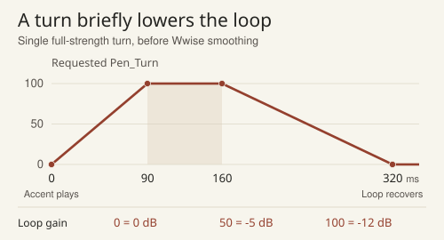
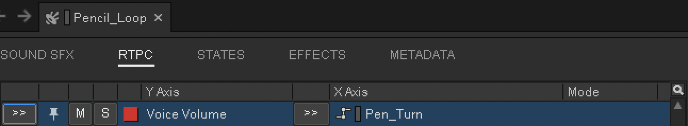
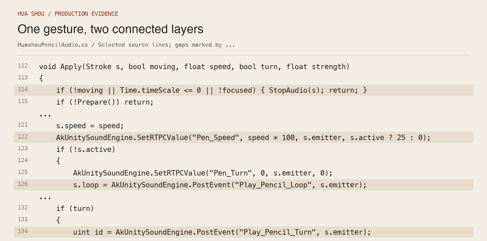
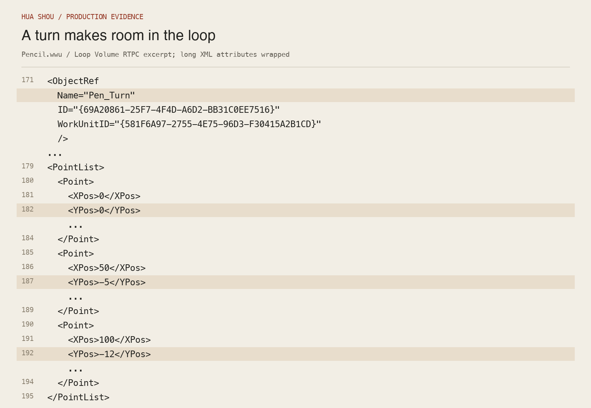
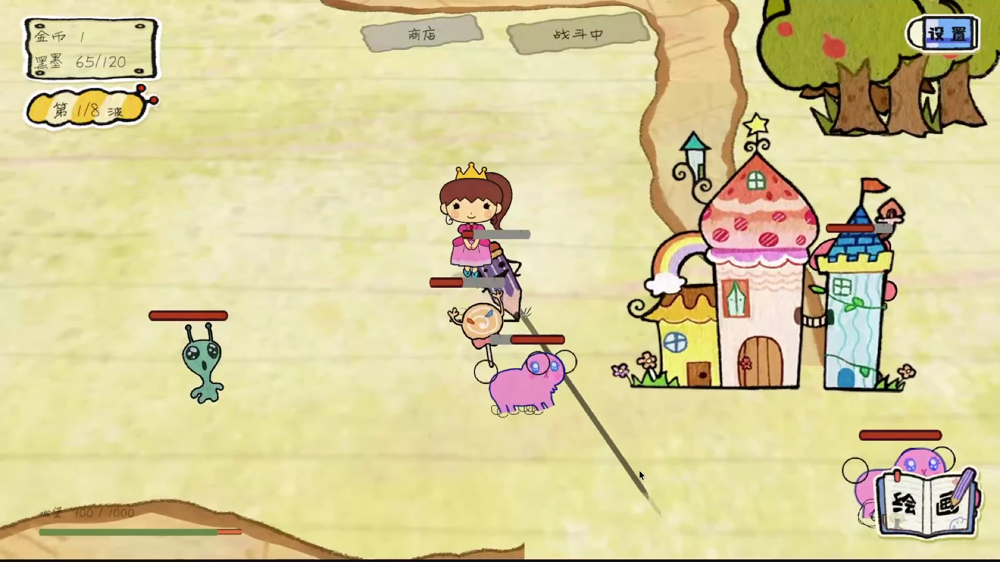
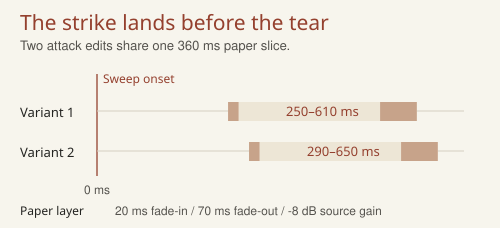
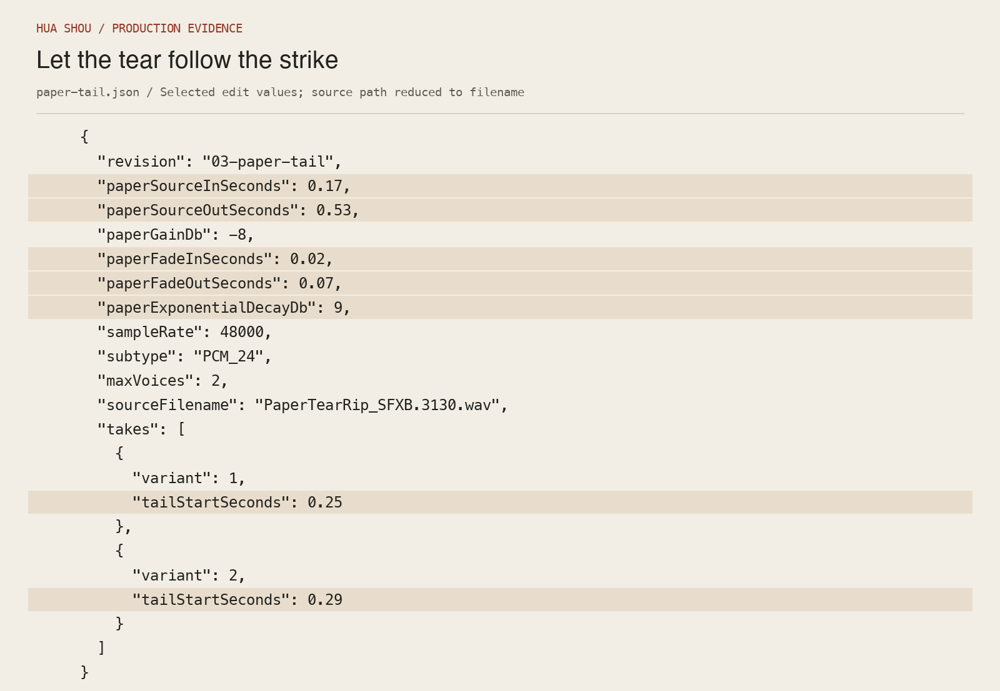
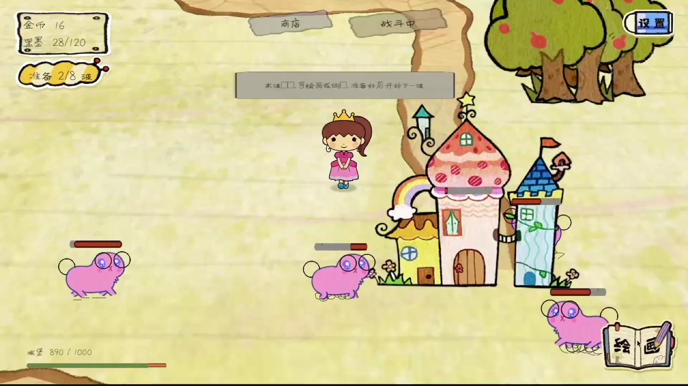

Audio implementation
Hua Shou
I used pencil friction for drawing and paper tears for creature attacks, then linked those sounds to player input in Unity and Wwise.
Pencil loop and turn accents
01:05
Drawing interaction
One loop, four turn accents.
The loop needs to continue through a curve without covering the turn accent.
Drawing speed controls the friction layer through Pen_Speed. Direction changes trigger one of four short accents. A second parameter, Pen_Turn, briefly reduces the loop beneath each accent.
The movement gate stops friction when the hand rests. Release, pause and loss of focus also stop playback.
A turn makes room for an accent
Wwise Authoring


- 01
Pencil_Loop + Pen_Speed
Unity measures drawing speed and sends Pen_Speed to the pencil hierarchy. A moving stroke keeps one friction loop running. Its level follows the gesture.
- 02
Pencil_Turn_Random + Pen_Turn
A bend triggers one of four short accents. On a full-strength turn, Unity raises Pen_Turn over 90 ms, holds it until 160 ms and returns it to zero by 320 ms. Wwise uses that value to dip the running loop by up to 12 dB.
- 03
Movement gate in Unity
The 240 ms interval spaces turn accents. About 45 ms without movement ends the friction so that stopping also has audible meaning.
Listen for Follow the friction through a curve. The accent briefly comes forward, then the friction carries on until the hand pauses.
Inspect the source evidence


Combat sound editing
Move the paper tear after the strike.
The first edit put the tear too close to the sweep’s attack.
I moved the paper layer to 250 ms and 290 ms in the two attack variants. The sweep now marks the hit; the tear supplies a short, fibrous release.
Both variants use the same 360 ms slice, with a 20 ms fade-in and 70 ms fade-out. The layer is reduced by 8 dB before mixing with the sweep.

Inside the paper-tail edit
Sample editing

- 01
Select the material
Cut 0.17–0.53 s from the Splice Office Building paper-tear sample. The 360 ms slice supplies the fibrous texture.
- 02
Move it into the release
Place the slice at 250 ms or 290 ms in the two attack variants. A 20 ms fade-in softens its entry and a 70 ms fade-out clears the tail.
- 03
Keep the attack readable
The sweep remains the onset. The paper layer sits 8 dB lower than its source and decays through the release.
Listen for At 01:13, listen for the pink creature’s sweep and the dry texture that follows.
Inspect the source evidence

Mix and music
Change the mix with the player’s task.
Drawing and combat place different demands on the same mix.
Drawing foregrounds the pencil layer. Summon and danger cues request priority over repeated action sounds. Preparation and combat call separate music cues.

The mix behind the change of focus
Implementation
A shared foreground state coordinates the Unity effects and Wwise playback. Drawing, summon-related foreground requests and danger warnings each adjust the surrounding balance. Attack density affects ordinary action sounds; key feedback retains its priority.
The predominantly 2D mix focuses on material, timing and attention. In the recorded wave flow, preparation and combat call their corresponding music cues.
Roles & sources
Game design and visual art: Hua Shou team. Sound design, editing and interactive audio: Hu JinLin.
Pencil and paper textures: Office Building library via Splice. Sweep layers: Fantasy Game 2. I selected, edited, layered and implemented these library recordings.
Music includes Suno-generated material, selected, edited and integrated by me. The playable version uses a friction loop and turn accents.